Abstract
Scientific and environmental imagery often suffer from complex mixtures of noise related to the sensor and the environment. Existing restoration methods typically remove one degradation at a time, leading to cascading artifacts, overcorrection, or loss of meaningful signal. In scientific applications, restoration must be able to simultaneously handle compound degradations while allowing experts to selectively remove subsets of distortions without erasing important features. To address these challenges, we present PRISM (Precision Restoration with Interpretable Separation of Mixtures). PRISM is a prompted conditional diffusion framework which combines compound-aware supervision over mixed degradations with a weighted contrastive disentanglement objective that aligns primitives and their mixtures in the latent space. This compositional geometry enables high-fidelity joint removal of overlapping distortions while also allowing flexible, targeted fixes through natural language prompts. Across microscopy, wildlife monitoring, remote sensing, and urban weather datasets, PRISM outperforms state-of-the-art baselines on complex compound degradations, including zero-shot mixtures not seen during training. Importantly, we show that selective restoration significantly improves downstream scientific accuracy in several domains over standard "black-box" restoration. These results establish PRISM as a generalizable and controllable framework for high-fidelity restoration in domains where scientific utility is a priority.
Scientific and environmental images are often impacted by complex, interacting effects.
In order to do analysis, scientists often need to restore images by removing only the distortions that interfere with their analysis. Existing methods typically treat these compound effects by iteratively removing fixed categories, lacking the compositionality needed to handle real-world mixtures and often introducing cascading artifacts, overcorrection, or signal loss. Our method, PRISM, allows experts to selectively restore images by controlling which distortions to remove.

How do we handle these compounding effects?
Our principled embedding formulation for compound degradations, combines weighted contrastive learning with compound-aware supervision to create a structured, compositional latent geometry. This geometry yields separable, controllable embeddings for primitives and their mixtures, enabling automated restoration and robust performance under increasingly complex and unseen combinations.
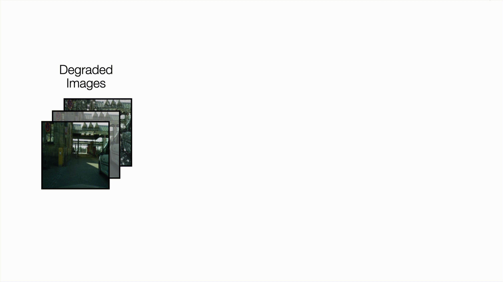
On our new benchmark of compound degradations, PRISM's weighted contrastive loss closes the gap between partial and composite prompts for more robust prompt following, and enables high-fidelity restoration under complex mixtures.
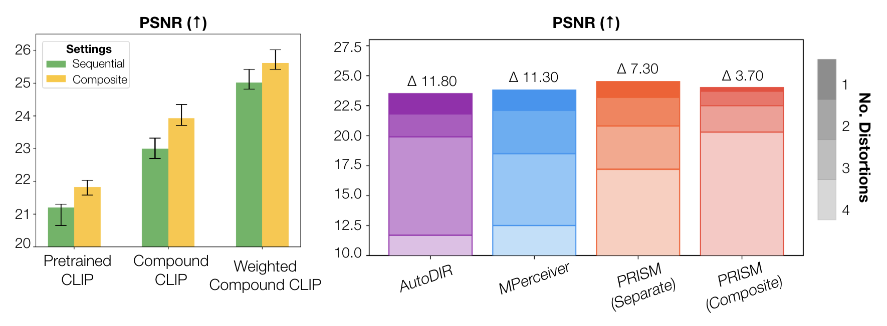
PRISM supports both automatic restoration and prompt-driven, selective correction for scientific analysis.
With more informative image embeddings, we can train a lightweight distortion classifier to automatically identify and the distortions present in an image. This enables automatic restoration when the user does not provide a prompt, while still allowing for expert control when desired.

PRISM enables step-by-step restoration where experts can progressively correct different types of distortions. Consider this example of a drone image over a reef, where an ecologist might be interested in understanding the distribution of coral. Click through the corrections below to see how an expert can exploratorily and iteratively restore an image for real-world distortions that are difficult to model.
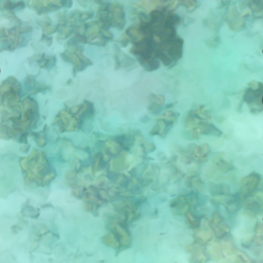
Here's a drone image over a reef. We want to remove the distortive effects of the waves.
While experts can interactively restore images step-by-step, PRISM can also detect and correct multiple distortions automatically.
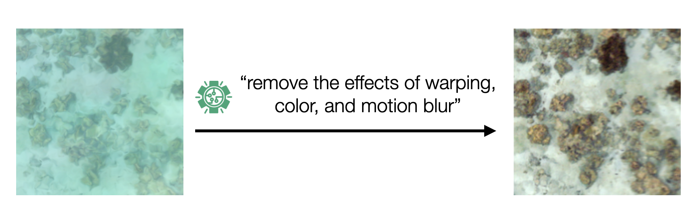
This compositional alignment supports zero-shot generalization to unseen mixtures in the real world, supporting scientific workflows across domains.
Take a look at a few examples from different scientific domains below. Click the buttons to switch between domains and see how PRISM handles different real-world distortions.
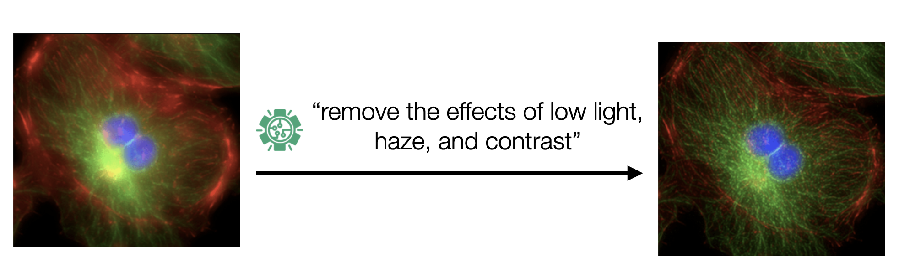
Microbiology imaging often suffers from over-fluorescence and noise due to sensor limitations. PRISM can restore fine cellular details while preserving important biological structures, without ever being explicitly being trained on examples of a glowing effect.
Current black-box restoration methods often overcorrect, and erase or distort important scientific signals that are key to analysis.
A unique angle of this work is our emphasis on downstream task fidelity rather than perceptual aesthetics. While most restoration methods optimize for visual appeal or standard image quality metrics, PRISM shifts priorities toward scientific precision—preserving the specific signals that matter for each analytical task while removing only the distortions that interfere with analysis. Our method, PRISM, allows experts to selectively restore images by controlling which distortions to remove. Below, we compare segmentation results on microscopy data using different image qualities. We use degraded widefield images paired with high-quality structured illumination microscopy (SIM) as ground truth.
Microscopy Image
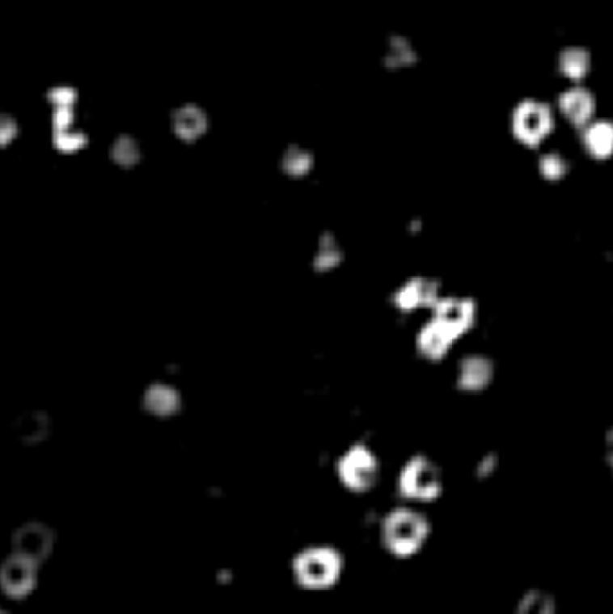
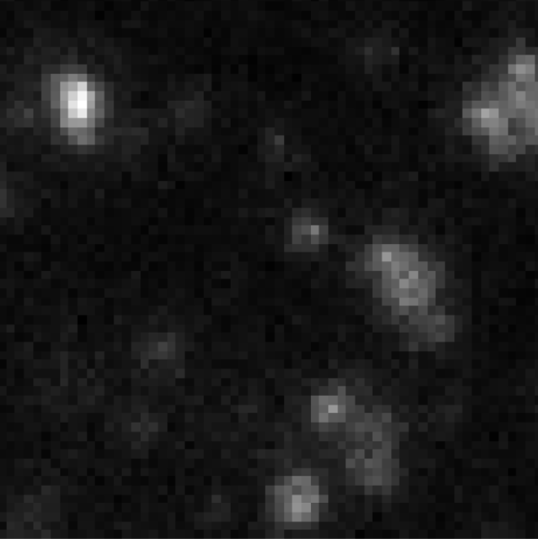
Segmentation Map
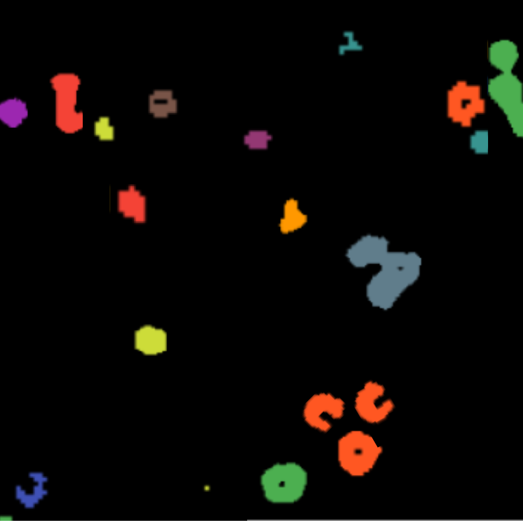
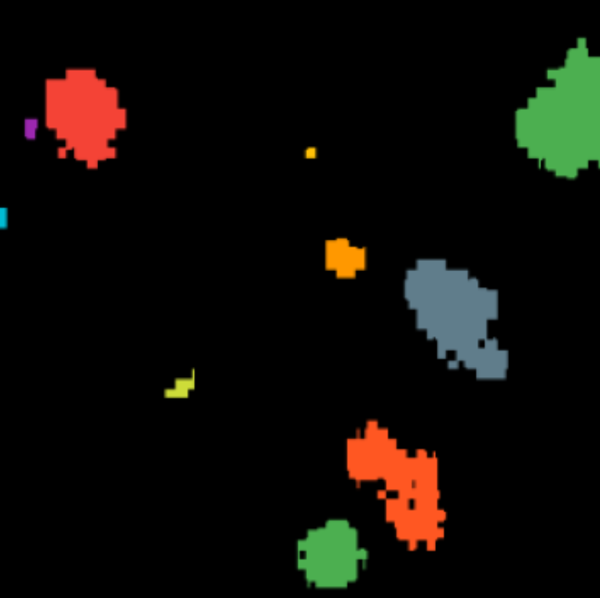
Click the buttons above to compare segmentation quality across different image sources. We observe that selective restoration improves segmentation of clathrin-coated pits in microscopy. Super-resolution alone preserves the underlying semantic content, while automatically detecting and removing noise suppresses faint but biologically relevant signals, reducing accuracy.
Let's now consider an example from camera trap data (taken from the iWildCam 2022 dataset). Here, we compare three images: the original low-quality (LQ) sensor image, the fully restored image using a black-box method, and the selectively restored image using PRISM. Hover over any region in the images to see a magnified view across all three methods simultaneously.
Can you spot the tail?
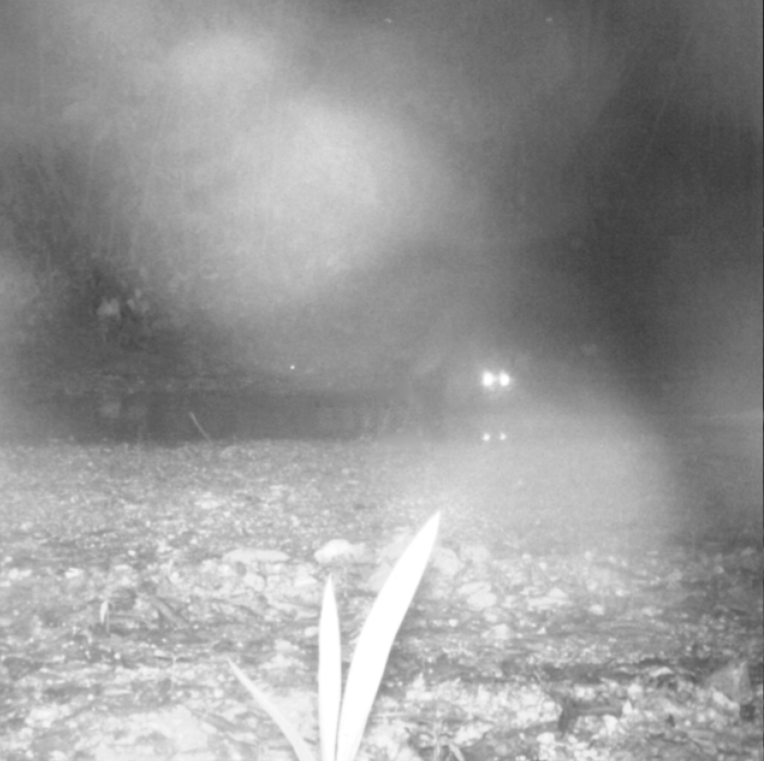
LQ Sensor
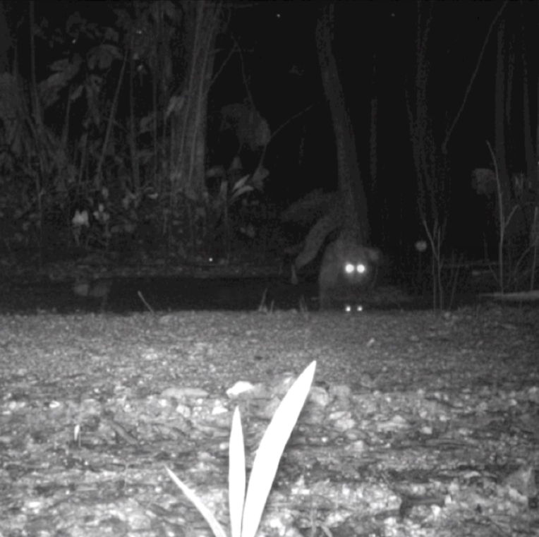
Full Restoration
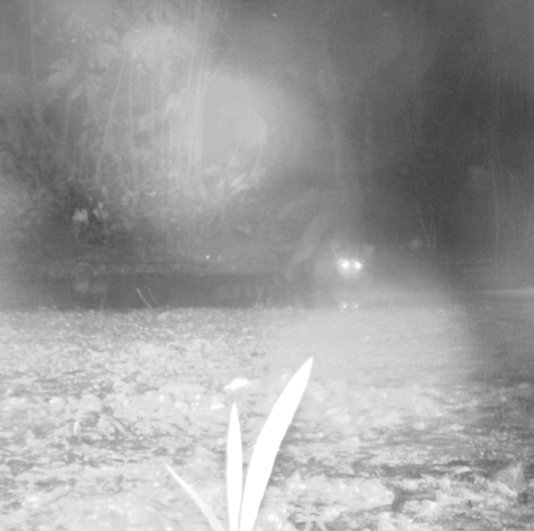
Selective Restoration
Notice how selective restoration preserves the fine details needed for accurate species classification while avoiding overcorrection artifacts. This helps us properly recognize that the species is a racoon!
How does this translate across downstream tasks?
Different scientific analyses on the same data require preservation of different visual cues. We evaluate PRISM on two distinct tasks using microscopy data from BioSR: (1) segmentation of clathrin-coated pits, which depends on high-frequency structural details and edge contrast, and (2) fluorescence intensity quantification within regions of interest (ROIs), which is sensitive to intensity bias and noise but tolerant to mild blurring. Segmentation performance is measured by mean IoU using MicroSAM, while fluorescence quantification uses mean squared error of ROI intensities. The results show that only super-resolving the data excels for segmentation, while denoising alone is optimal for fluorescence quantification. Combined denoising and super-resolution underperforms for both, highlighting the need for task-specific control.
Segmentation mIoU ↑
Fluorescence MSE ↓
Super-resolution alone produces the best segmentation results by enhancing structural boundaries, but this same enhancement alters intensity distributions, increasing fluorescence error. Conversely, denoising alone preserves intensities while reducing noise variance, making it optimal for intensity quantification but harmful for fine-grained structural segmentation. Combined prompts yield intermediate or degraded results for both tasks. This experiment confirms that controllability is essential even within a single domain—PRISM's ability to flexibly apply different restoration subsets is crucial for scientific workflows where multiple analyses operate on the same raw data, rather than applying blanket removal of all degradations.
Conclusions & Key Takeaways
PRISM represents a fundamental shift in how we approach image restoration for scientific applications. We practically ground this work by first prioritizing corrections over real-world mixtures of degradations. Rather than treating restoration as a one-size-fits-all problem optimized for perceptual quality, we demonstrate that downstream task fidelity and expert control are essential for scientific imaging workflows.
Compositional Understanding
Our weighted contrastive learning approach creates separable, compositional embeddings that enable robust handling of compound degradations and zero-shot generalization to unseen distortion mixtures in real-world scenarios.
Expert-in-the-Loop Workflow
By supporting both automatic distortion detection and prompt-driven selective restoration, PRISM balances efficiency with expert control, enabling scientists to make informed decisions about which corrections serve their analytical goals.
Cross-Domain Generalization
PRISM successfully handles diverse scientific domains—from microscopy to wildlife monitoring to underwater imaging—demonstrating that compositional understanding of distortions enables broad applicability without domain-specific retraining.
Task-Aware Restoration
Different scientific analyses require preservation of different visual cues. PRISM enables selective restoration where experts control which distortions to remove based on their specific analytical needs, rather than applying blanket correction.
PRISM establishes a framework where restoration serves scientific precision rather than aesthetic appeal. We enable scientists to extract maximum analytical value from complex, degraded imagery while maintaining confidence in their results. This approach opens new possibilities for scientific discovery in domains where image quality has traditionally limited analysis.